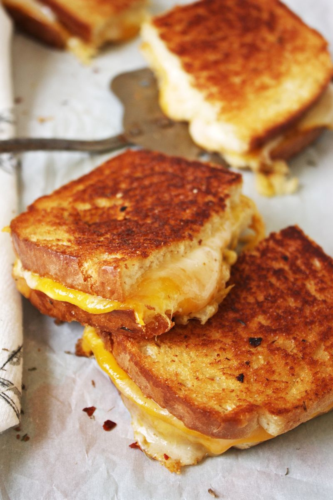

Grilled Cheese

Description
This recipe will show you how to make one of my favorite lunches/ dinners! Grilled Cheese!
Ingredients
- 2 - Slices of Bread (Your choice on type)
- 1 - Butter knife full of Peanut Butter
- 2 - Slices of cheese (I recommend American Cheese)
Steps
- Warm up a greased skillet on the stove on Med - Low heat
- Place the slices of cheese inbetween your two slices of bread.
- Insert your new found Sandwhich in the skillet.
- After 2-3 minutes flip the cheese Sandwhich. Repeat step 3.
- Take your grilled cheese Sandwhich out of the pan.
- Plate the Sandwhich.
- Enjoy!